Elapsed time is 46.399471 seconds.
Elapsed time is 61.279999 seconds.
Elapsed time is 58.985178 seconds.
Elapsed time is 50.324136 seconds.
Elapsed time is 51.737737 seconds.
Elapsed time is 59.436142 seconds.
Elapsed time is 50.820980 seconds.
Elapsed time is 54.555541 seconds.
Elapsed time is 83.043821 seconds.
Elapsed time is 90.041208 seconds.
Elapsed time is 95.509874 seconds.
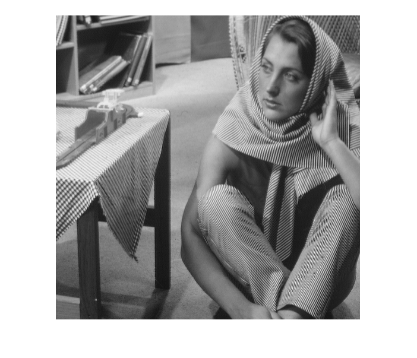
Fig.1 - Original Image of Barbara
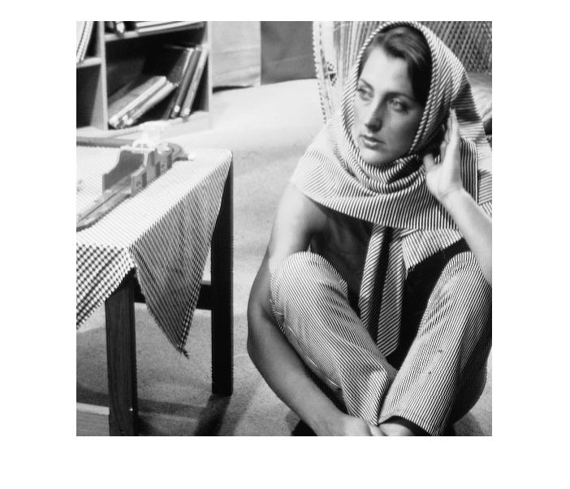
Fig.2 - linear Contrat Image of Barbara
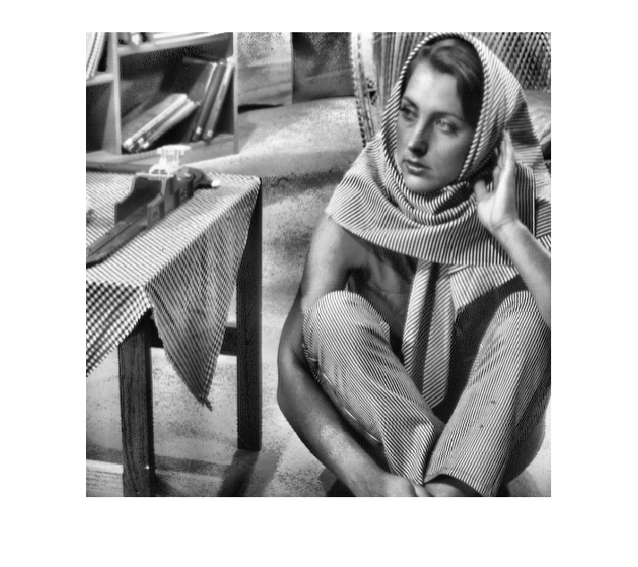
Fig.3 - Histogram Equalized Image of Barbara
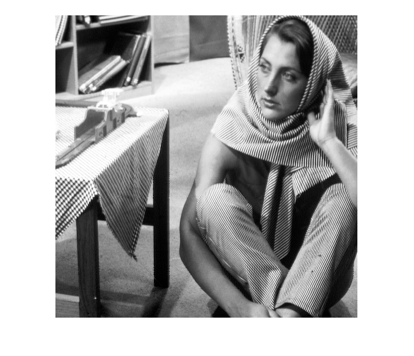
Fig.4 - Adaptive Histogram Equalized (with N = 101) Image of Barbara
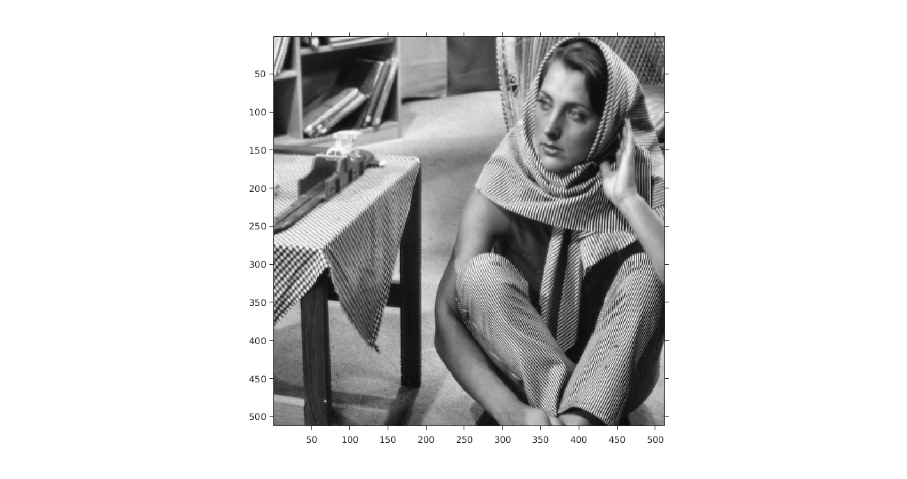
Fig.5 - Contrast Limited Adaptive Histogram Equalized (with N = 101, threshold = 100) Image of Barbara
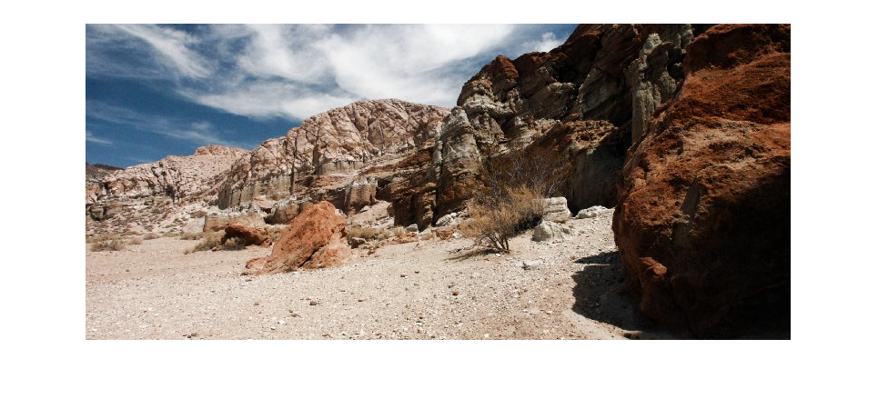
Fig.6 - Original Image of Canyon
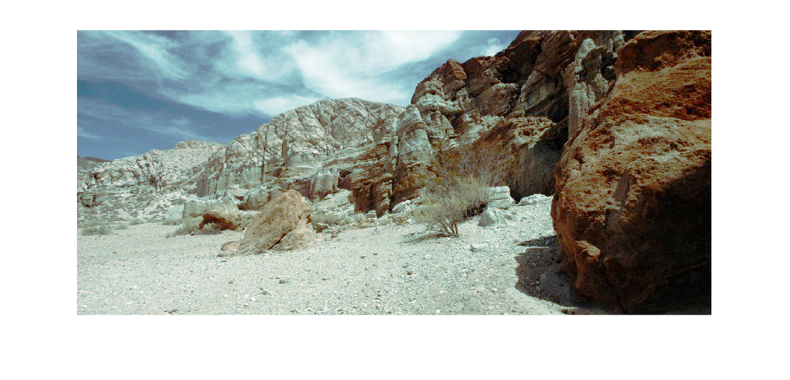
Fig.7 - linear Contrat Image of Canyon
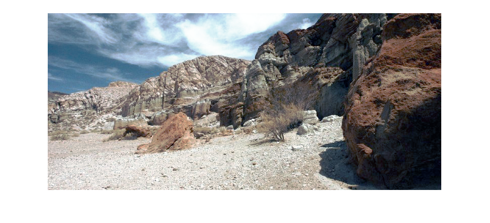
Fig.8 - Histogram Equalized Image of Canyon
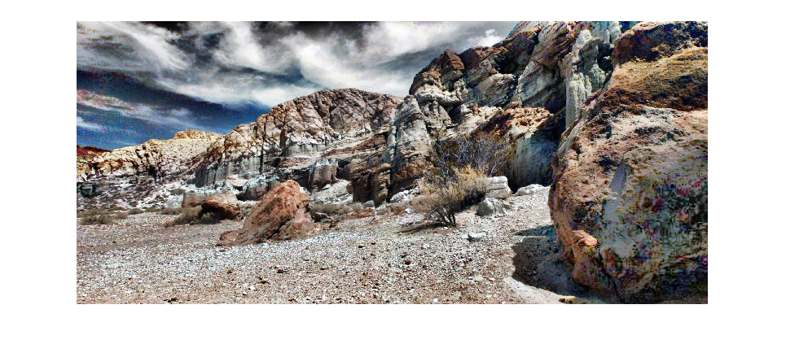
Fig.9 - Adaptive Histogram Equalized (with N = 101) Image of Canyon
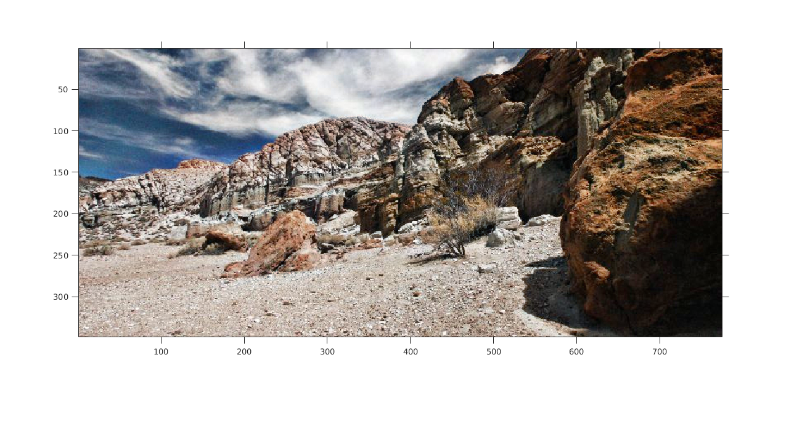
Fig.10 - Contrast Limited Adaptive Histogram Equalized (with N = 101, threshold = 100) Image of Canyon
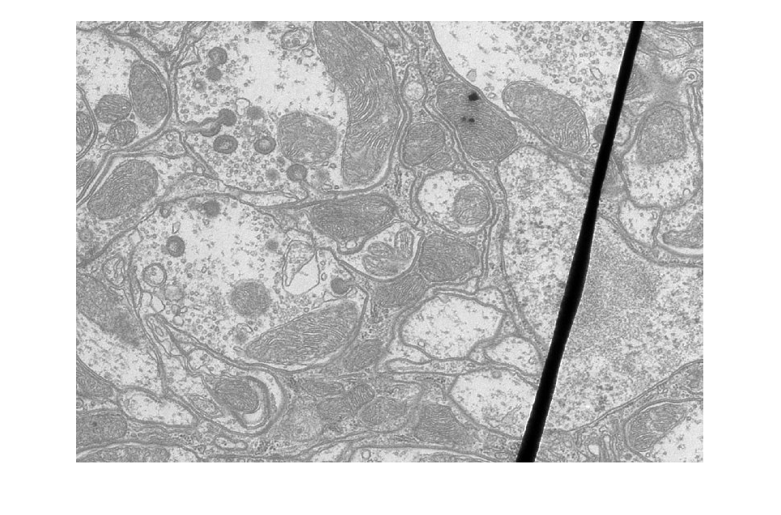
Fig.11 - Original Image of TEM
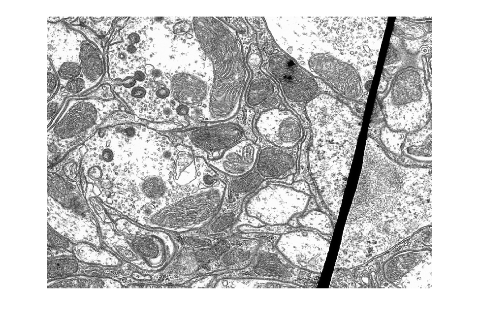
Fig.12 - linear Contrat Image of TEM
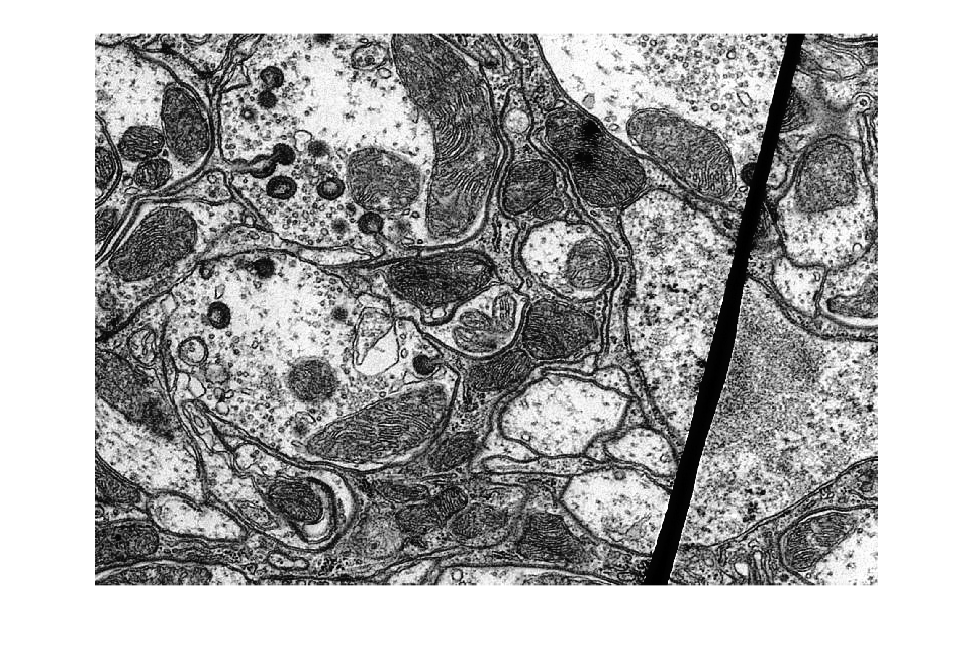
Fig.13 - Histogram Equalized Image of TEM
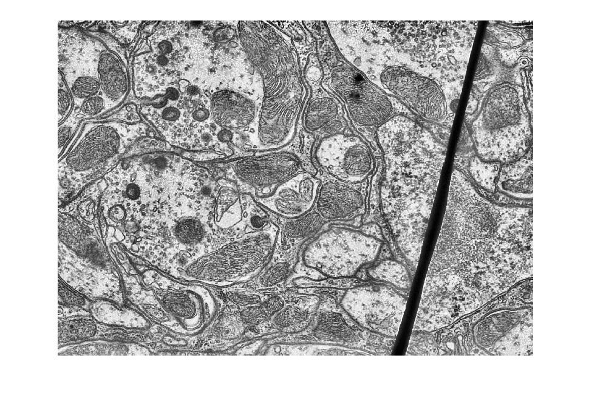
Fig.14 - Adaptive Histogram Equalized (with N = 101) Image of TEM
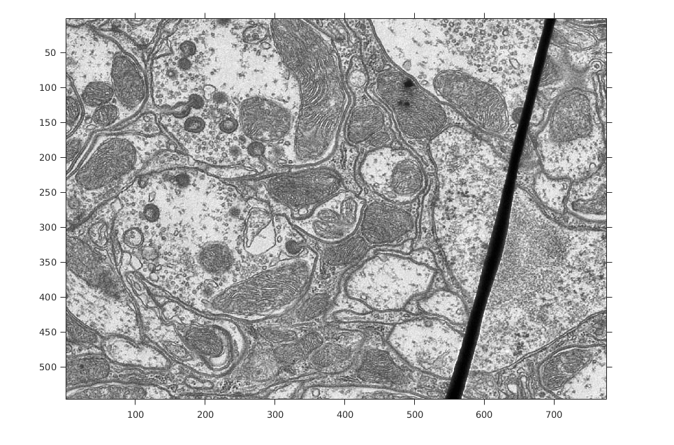
Fig.15 - Contrast Limited Adaptive Histogram Equalized (with N = 101, threshold = 100) Image of TEM
The function basically implements a piece wise linear function, which transforms every pixels in the input image to the corresponding pixels in the output image. For this we have used parameters a,b,c,d which implements the piece wise linear function (0,0) to (a,b) to (c,d) to (255, 255).
Adaptive Histogram Equalization
The function is used to perform Adaptive Histogram equalization on an image passed as inputImage using a window size of N (default assumed to be an odd number). The method uses two custom defined functions myHE (which is our implementation of histogram equalisation) and getNeighbourhoodWindow which is used to get a submatrix with (i.j) as center and size NxN. The images are operated upon with a window size of 5 to show the amplification of noise and with a size of 101 to show the low contrast enhancement.
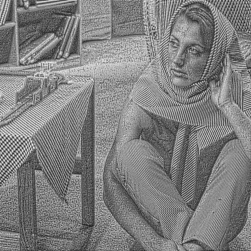
Fig 1 : Adaptive Histogram equalization with a small window size of 5 to show amplification of noise
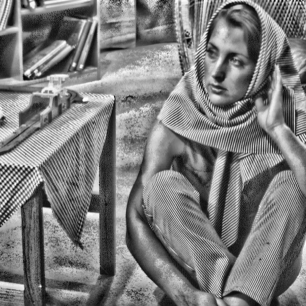
Fig 2 : Normal Adaptive Histogram equalization (window size = 45)
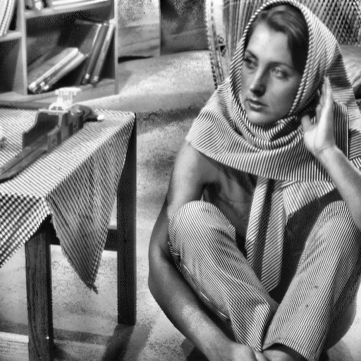
Fig 3 : Adaptive Histogram equalization with a large window size of 101 to show low contrast effect
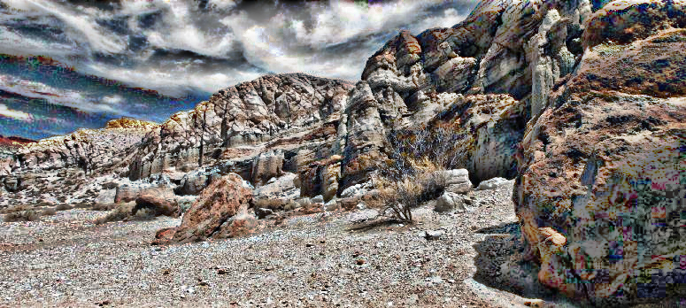
Fig 4 : Normal Adaptive Histogram equalization (window size = 45)
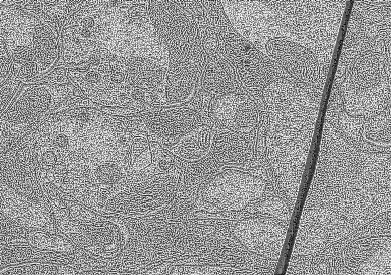
Fig 5 : Adaptive Histogram equalization with a small window size of 5 to show amplification of noise
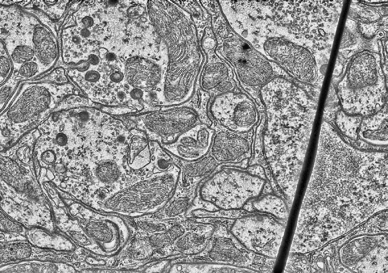
Fig 6 : Normal Adaptive Histogram equalization (window size = 45)
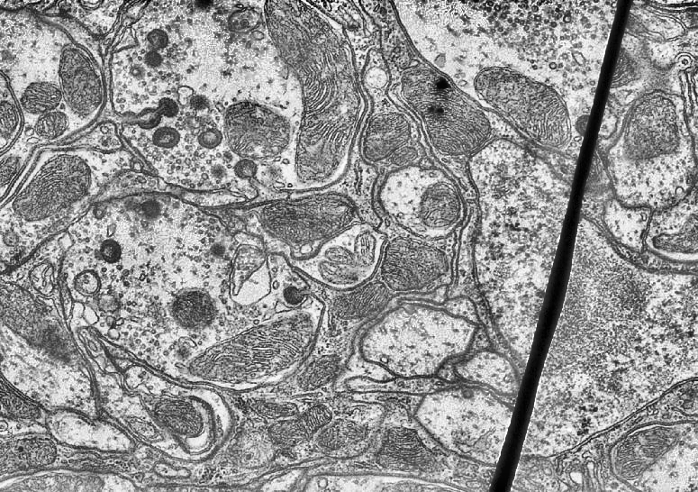
Fig 7 : Adaptive Histogram equalization with a large window size of 101 to show low contrast effect